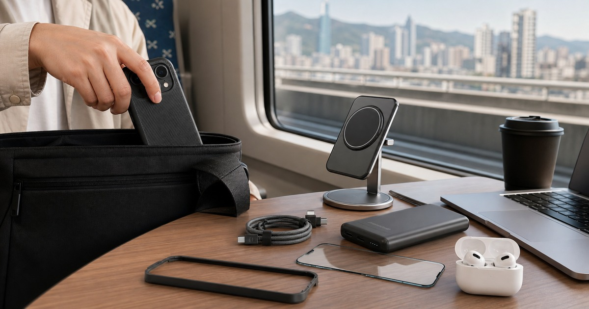
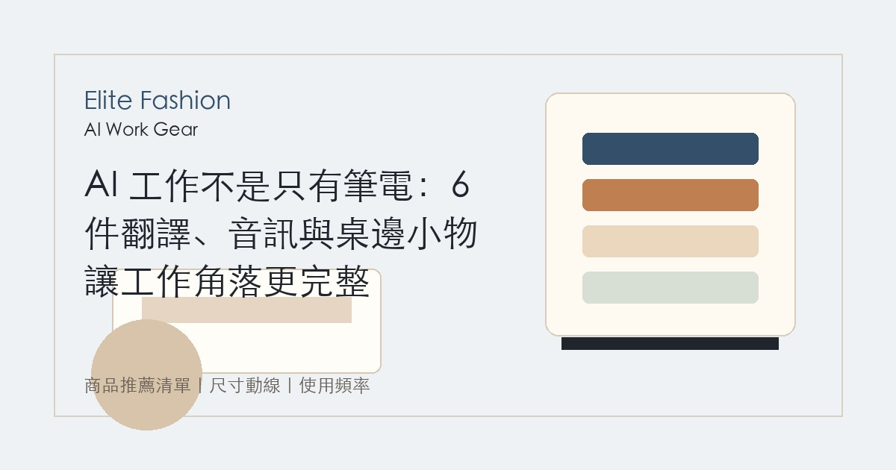
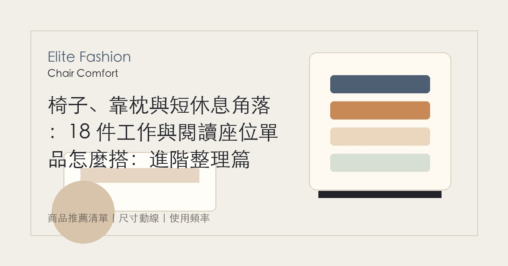
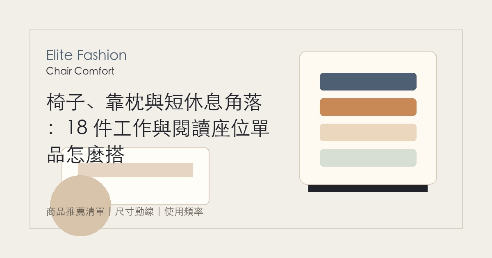
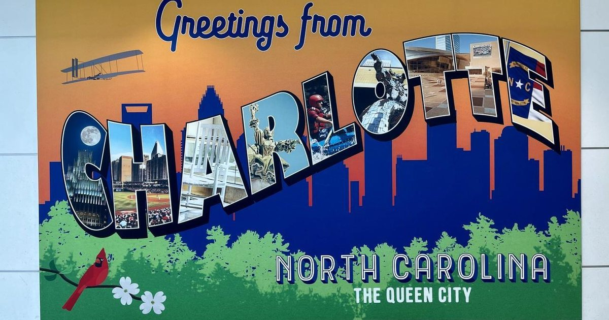
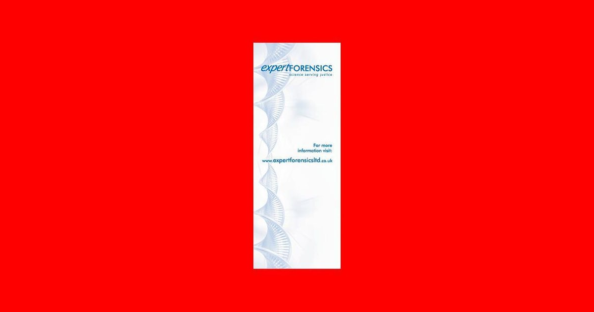

AI 工作重整與第二曲線
從辦公室協作、履歷整理、管理判斷、內容工作與副業測試，建立不暴露隱私也能提升效率的 AI 工作方法。
進入主題 →從工作、生活到品味選擇，這裡整理 AI 如何真正進入熟齡女性的日常，幫助妳把新技術翻成可理解、可判斷、可使用的下一步。
先從完整策展頁掌握順序，再進入單篇文章。
先從熟齡工作者最常遇到的任務開始，再往工具、職涯與第二曲線深入。
收錄這個主題最新上線的內容，從 AI 工具、職涯重整到數位生活，一次看懂值得關注的方向。

手機殼不只保護手機，也會影響通勤、拍照、桌面充電和每天拿在手上的風格一致性。
閱讀全文 →
手機配件先依通勤、車用、充電和桌面四個場景整理，保護殼只是第一步。
閱讀全文 →
工作小物要放回真實流程裡看：會議、外出、記錄、音訊與桌面收納，規格仍以商品頁為準。
閱讀全文 →工作座位要看桌高、坐姿切換與空間動線；椅子與靠枕只能輔助，仍需依個人尺寸與使用時間評估。
閱讀全文 →
工作座位要看桌高、坐姿切換與空間動線；椅子與靠枕只能輔助，仍需依個人尺寸與使用時間評估。
閱讀全文 →
工作座位要看桌高、坐姿切換與空間動線；椅子與靠枕只能輔助，仍需依個人尺寸與使用時間評估。
閱讀全文 →探討 2025 年創意主權的移交與數位 DNA 的傳承，分析亞洲設計師如何應對 AIGC 帶來的生存焦慮。
閱讀全文深入解析 2025 年 AI 如何透過預測性演算與 3D 數位工法，協助台灣紡織業達成零廢棄生產目標。
閱讀全文分析虛擬網紅如何透過 24/7 直播與深度互動敘事，在亞洲市場重塑品牌與消費者的情感鏈結。
閱讀全文
從情感讀取到 3D 數位試衣，探討 2025 年 AI 如何透過超客製化技術，將時尚轉化為極致的個人化體驗。
閱讀全文面對演算法的完美模仿，奢侈品牌如何防守其「數位領土」？深入解析亞太區 AI 基本法與美學專利的未來趨勢。
閱讀全文
當流行不再是意外，演算法如何透過社交聲量與視覺搜尋，在爆款誕生前 18 個月就精確鎖定潮流趨勢。
閱讀全文一流設計師不應該被行政瑣事淹沒。揭秘如何利用 Systeme.io (來自歐洲的信賴首選) 建立全自動化銷售與行銷系統，讓您在睡夢中也能經營品牌。
閱讀全文
從基因檢測到穿戴式數據分析，深入解析頂級抗衰老診所如何利用 AI 技術，協助精英人士達成「生物駭客」級的健康管理。
閱讀全文打造自動化商業帝國不需要百人團隊。深入評比 HubSpot, Jasper 與 AdCreative.ai，教您如何建立高投報率的數位工作流程。
閱讀全文當毛小孩比新生兒還多。解析 2026 年最新寵物科技，從 Fi Collar 智慧項圈到情緒翻譯，給毛家人最頂級的數據化守護。
閱讀全文當 AR 眼鏡取代了指南針。探索 2026 年最頂級的智慧戶外裝備，從衛星通訊 AI 到自動調溫布料，讓冒險更安全。
閱讀全文你不理財，AI 幫你理。評測 eToro 與 IBKR 的最新 AI 功能，教您如何構建 24/7 自動運轉的被動收入系統。
閱讀全文豪宅的新定義是「懂你」。探索 Matter 2.0 與 AI 安全系統如何主動調節環境，將您的家升級為會思考的有機體。
閱讀全文依更新時間整理，方便從主題分類頁直接進入所有相關文章。